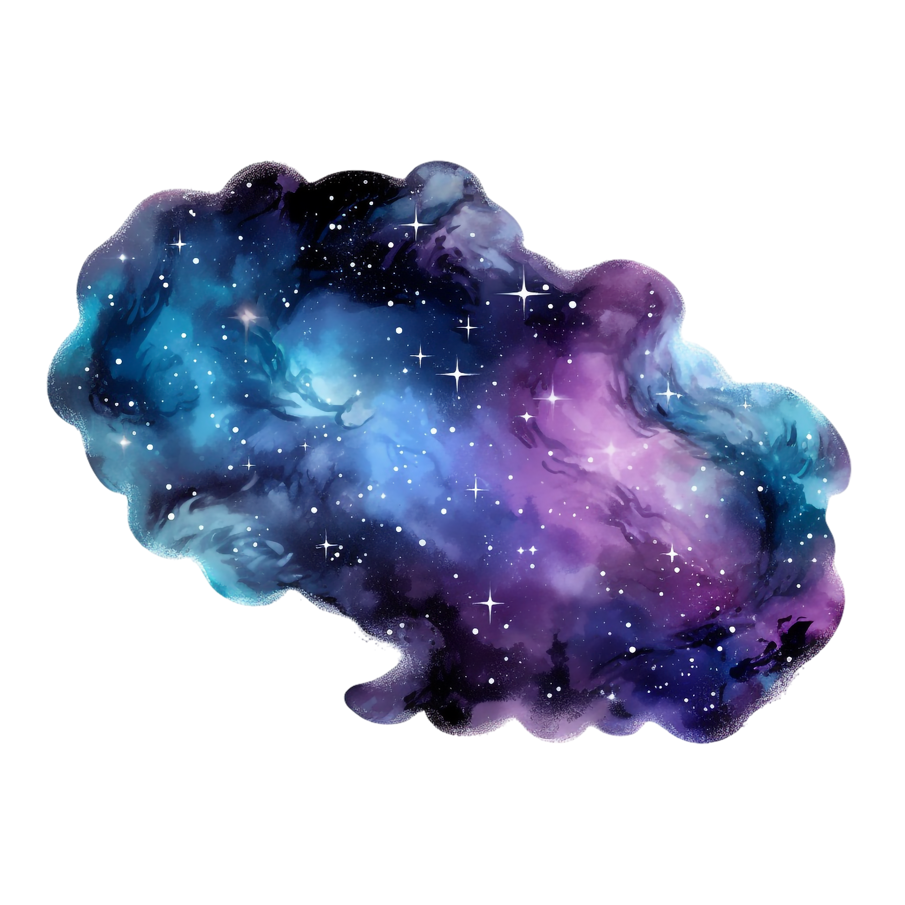

We know that main sequence stars use nuclear fusion to create pressure. Nuclear fusion is the process in which an atom's nucleus collides with another with enough force that the nuclei merge. This means the number of protons, which define the atom's elemental identity, changes. For most of a star's life, this is hydrogen fusing into helium. However, since there is a finite amount of hydrogen, the star core is now mostly helium, and it begins to contract on itself, creating heat, which allows for the surrounding layer to undergo fusion. This shell fusion releases a much larger amount of energy, greatly overpowering the gravitational force, causing the star to expand.